0. 全体の流れ
トップページ（入口）
アドレスをそのまま開く（末尾に何も付けない）と トップページ（index.html）が出ます。入口は 2 つだけです。
- ＋ 大会を新規作成 … テンプレート・コピー・完全新規から選んで大会を作ります（§1「大会を作る」）。
- ▶ 大会一覧 … いまある大会の一覧です。行を押すと、その大会の運営画面が直接開きます。行の右の ⋯ から コピーして作成・得点を消して複製・ファイルに保存・アーカイブ・削除ができます（運営画面に大会一覧はありません）。
一覧は 更新の新しい順に並び（状態が変わっても並びは変わりません）、5 件まで出ます。残りは すべて見る で開きます。アーカイブ済みの大会は下の ▸ アーカイブ（n 件） に畳まれます。システムテスト用 のテンプレートで作った大会は既定で隠れていて、テストも表示 にチェックを入れると テスト の印付きで出ます。
入口の下の小さなリンクから 採点画面・順位表示・ヘルプ へ行けます。コート端末の方はここから採点画面へ入ってください。アプリの説明と 7 段階の流れは ▸ このアプリについて に畳まれています。
右上の 🖥 / 📱 は、運営画面の行き先を PC 用（desk.html）とスマホ用（admin.html）で切り替えるボタンです。押した端末に控えられるので、次に開いたときも同じほうが出ます。
index.html だった頃のブックマーク）を開くと、自動で scoring.html に移ります。コートのタブレットのブックマークは貼り替えなくて構いません。大会は、大会を作るところから発表までを一本の流れで進めます。
一巡目＝全員が1回ずつ斬る回です。二巡目＝同じ選手がもう1回斬る回です。得点は一巡目と二巡目を合わせた合計で競います。
大会には 状態 があります。運営者が 次へ進む のボタンで1段ずつ進め、自動では変わりません。
- 準備中 — 技得点表・選手を自由に入れられます。採点はまだできません。
- 一巡目 進行中 — コートの端末で一巡目を採点します。
- 二巡目準備（形の登録） — 一巡目を終了すると、二巡目の行が自動でできます（形は申請された二巡目の形。申請の無い選手は一巡目と同じ）。当日の変更があれば形を直し、確かめ終えたら二巡目を開始します。
- 二巡目 進行中 — コートの端末で二巡目を採点します。全員が斬り終わったら 二巡目を終了 ▶ を押します。
- 二巡目終了 — 順位を確かめます。試合進行に3部門の上位3名の要約が出ます。直したいことがあれば1つ前に戻せます。
- 最終結果 — 得点・選手・技を編集できなくなります。試合進行に表彰の区画（上位3名と、発表モード・共有リンク・成績表のボタン）が出ます。発表・共有・ファイル保存はできます。
- アーカイブ — 見るだけ。大会一覧の「アーカイブ」欄に移り、採点画面の選択肢から消えます。
PC 用の運営画面では、大会名の下の状態バーに 準備中 → 一巡目 → 形登録 → 二巡目 → 最終結果 の5段で出ます（いまの段が金色）。上の7つの状態との対応は次のとおりで、進行中・二巡目終了・アーカイブは段の中に小さく添えます（例: 二巡目 二巡目終了、最終結果 アーカイブ）。右に 確定 5 / 8 のような件数が出ます。
- 一巡目 … 一巡目 進行中
- 形登録 … 二巡目準備（形の登録）
- 二巡目 … 二巡目 進行中・二巡目終了
- 最終結果 … 最終結果・アーカイブ
大会のデータはサーバーに1つだけあります。運営者の PC もスマホも、各コートのタブレットも、同じ大会を読み書きします。
図の各段が、上に並べた 7 つの状態です。段と段の間は、運営画面の 次へ進む のボタン（試合開始 ▶ 一巡目を終了 ▶ …。PC 用は 試合進行 の工程表の下）で進みます。運営画面で状態を進めないと、コートの端末は採点できません。
1. 大会の作成
大会前の準備
前日までに 技得点表（techniques.html。トップの 技得点表 からも開けます）を開いて、技名と配点が今年のものになっているか確かめてください。開いた直後は閲覧モード（文字だけの表）です。直すときは ✎ 編集する を押します。
配点は大会ごとです。画面の上の 表示する対象 で、雛形（新規大会の初期値） かどの大会かを選びます（ハッシュ無しで開くと、進行中の大会があればそれが選ばれます）。雛形を直しても、すでにある大会の配点は変わりません。大会を作る前に雛形を直しておくと、その後に作る大会にそのまま入ります。
大会を作る
いちばん簡単なのはトップページからです。トップの ＋ 大会を新規作成 を押すと、4 つの作り方から選べます。
- 前回の大会をコピー … 直近に触った大会（テスト大会とアーカイブ済みを除く）をそのままコピーします。毎回の大会はこれがいちばん速いです。
- テンプレートから … 下の 3 種類から選びます。
- 大会一覧からコピー … 元にする大会を選んでコピーします（アーカイブ済みも選べます）。
- 完全新規 … 名前・日付・会場だけの空の大会です。技と配点は雛形から入ります。
どれを選んでも、次の画面で 大会名・日付（今日が入っています）・会場 を入れて 作成 を押します。作ったあとは、その大会の 選手登録 が開きます。
テンプレート 3 種
- 稽古用 … 技と配点は雛形のまま。コートは 稽古 の 1 つ。選手は 0 名。道場の稽古でその場の何人かを採点するとき。
- 大会用 … 技と配点は雛形のまま。コートは A・B。ゼッケン番号を必須にする が入った状態。選手は 0 名。本番の大会を一から作るとき。
- システムテスト用 … 大会用 に加えて、ダミーの選手 20 名（男子01〜10・女子01〜10、ゼッケン 1〜20、A と B に交互、技も入っている）。初めての人が練習する・新しい端末で通しの確認をするとき。
運営画面には PC 用（desk.html）と スマホ用（admin.html）があります。中身は同じ大会で、ヘッダーの 🖥 / 📱 でいつでも行き来できます。当日の受付や名簿の打ち込みは PC 用が向いています。
大会を作るのはトップの ＋ 大会を新規作成 だけです（前回の大会をコピー／テンプレート／大会一覧からコピー／完全新規）。作ると、その大会の運営画面の 選手登録 が開きます。運営画面に「新規作成」はありません。大会を切り替えるときは、PC 用は左の区画の ← 大会一覧、スマホ用は ⋯ → 🏠 トップ でトップの大会一覧へ戻って選びます。
去年の大会をコピーして作る
トップの 大会一覧 で、元にする大会の行の ⋯ → 📄 コピーして作成 を押します（トップの ＋ 大会を新規作成 → 大会一覧からコピー と同じ画面が、その大会を選んだ状態で開きます）。
- 大会名（「元の名前（コピー）」が入っています）・日付（今日）・会場 を直します。
- 選手も複製する（得点は消す） にチェックを入れると、元の大会の一巡目の選手だけが、名前・コート・性別・新人・技（二巡目の形の申請があればそれも）をそのままに、得点 0 で入ります。二巡目の行は複製しません。
- 技と配点は必ず複製されます。共有リンクと配信用ボードのアドレスは引き継ぎません。
できた大会は 準備中 です。アーカイブ済みの大会からもコピーできます。
入力を省くなら、行の ⋯ → 📑 得点を消して複製 です。確認のあと、選手（一巡目の行）と技・配点をそのまま写して得点だけ消した大会が「元の名前（コピー）」・今日の日付で作られ、その選手登録が開きます。名前と日付は基本情報で直せます。
基本情報（コート・必須の設定）
PC 用の運営画面で大会を開き、左の 基本情報 を選ぶと、大会名・日付・会場のほかに コート一覧 を編集できます。
- ＋ コートを足す でコート名（A など）を入れます。選手が 1 人もいなくても、そのコートが選手登録のコート候補と 試合進行 のカードに出ます。
- 足したコートは × で外せます。灰色のコート（「A（選手あり）」）は選手のコート指定から決まったもので、外せません。外すときは 選手 の区画でその選手のコートを変えます。
- コート名の決まり: 空・-・未分類 は使えません。32 文字まで、同じ名前は 1 つだけ、20 コートまでです。
- 足した・外したあとは 保存 を押してください（上の 保存 でも同じように保存されます）。
同じ画面の ゼッケン番号を必須にする / 級位・段位を必須にする は、一巡目にその項目が空の選手がいる間だけ 試合開始 ▶ で止めるための設定です（§2 の「当日の流れ」）。登録そのものは空のままできます。
終わった大会を片づける（アーカイブ）
最終結果 まで進んだ大会は アーカイブ にできます。試合進行 の工程表の下の アーカイブ ▶、またはトップの大会一覧の行の ⋯ → 📥 アーカイブ です。
- トップの大会一覧では、下の ▸ アーカイブ（n 件） に畳まれます。当日の大会と混ざりません。
- 採点画面の大会の選択肢から消えます。押し間違えて去年の大会に採点してしまう事故を防ぐためです。
- 見るだけはできます。共有リンクと発表モードもそのまま開けます。
- 戻すときは 試合進行 の ◀ 最終結果 に戻す です。
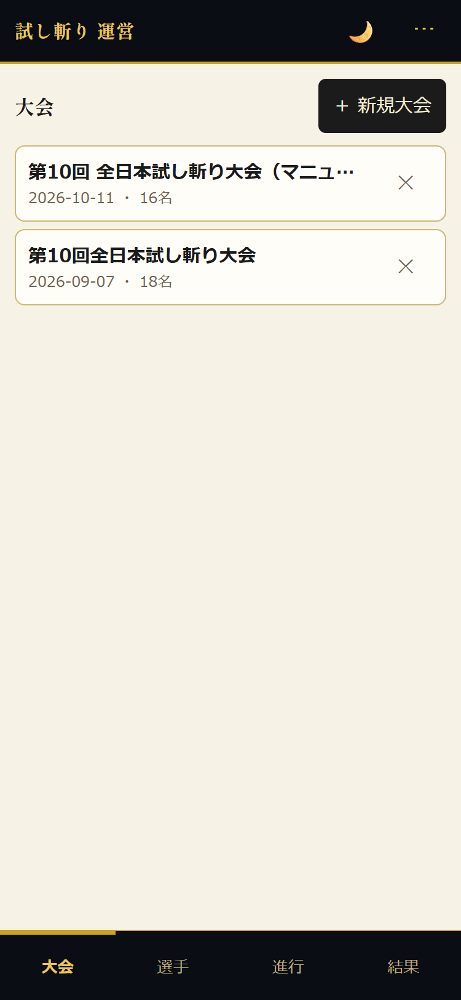
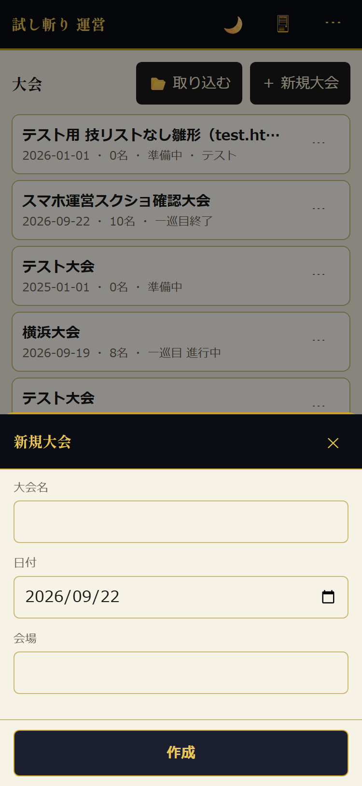
別のサーバーや PC から取り込む
ほかのサーバーで作った大会を、そのまま持ってこられます。大会情報・技の配点・選手（採点済みの得点も）・採点履歴が一緒に入ります。
- 持ち出す側で、トップの大会一覧の行の ⋯ → 💾 ファイルに保存（または PC 運営の 基本情報 の 💾 ファイルに保存、スマホ運営の ⋯ → 💾 大会をファイルに保存）を押す。
tameshigiri_日付_大会名.jsonが保存されます。 - 取り込む側で、トップの 📂 ファイルから取り込む を押し、そのファイルを選ぶ。
- 大会を取り込みました（n 名） と出て、選手登録タブが開きます。
選手を登録する
タブで 選手登録 を選びます。登録のしかたは3通りあります。
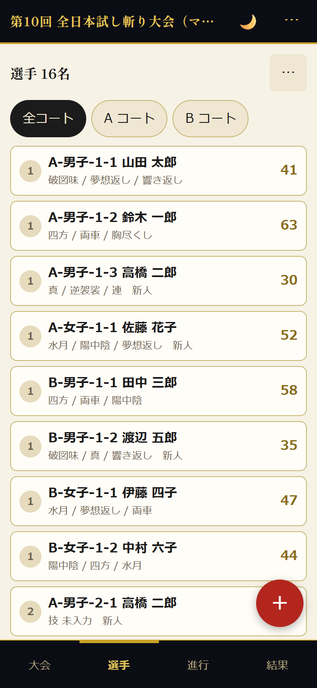
（a）1人ずつ登録する
右下の赤い ＋ を押すと 選手を追加 のシートが開きます。
- 名前 を入れる。
- コート を選ぶ（A B、＋ で増やせます）。
- 性別 を選ぶ（男子 女子）。
- 新人なら 新人 にチェックを入れる。
- ゼッケン番号 を入れる（1〜9999 の整数。空でも登録できます）。同じ大会の中で同じ番号は使えません。すでに使われている番号を入れると ゼッケン番号 12 は「山田 太郎」が使っています と出ます。
- 級位・段位 を入れる（無級 十級〜一級 初段〜十段 の候補から選べます。錬士六段 のように自由にも書けます。20 文字まで）。
- 真剣を借りる選手は 真剣レンタル にチェックを入れる。チェックすると、技の候補が抜刀後の形だけになります（下の「技の選び方」）。
- 技を ① ② ③ の枠ごとにタップして選ぶ。
- 二巡目で形を変える選手だけ、二巡目の技（空なら一巡目と同じ形） の ①②③ も選びます（大会の前に申請を受けているとき）。空のままなら、一巡目と同じ形で二巡目を行います。申請が空のまま最初の枠を押すと、一巡目の技が下書きとして入ってから開くので、変える枠だけ選び直せば済みます。一巡目と同じにする で空に戻せます。
- 保存して次を追加 で続けて登録、保存して閉じる で終わります。
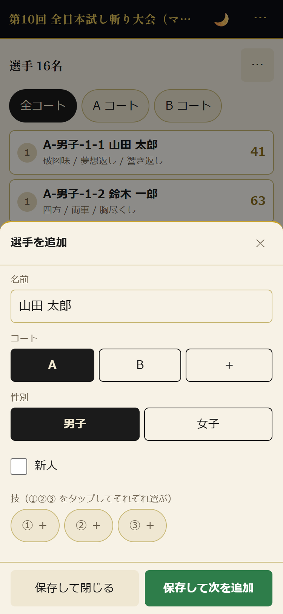
（b）複数人をまとめて登録する
右上の ⋯ → 👥 複数人をまとめて登録 を押します。
- コート・性別・新人 はその場の全員に共通で付きます。
- 名前（1行に1人） の欄に名簿を貼り付けます。下に人数が出ます。
- 登録 を押すと A コート 男子 4 人を登録します。よろしいですか？ と確認が出ます。OK でまとめて入ります。
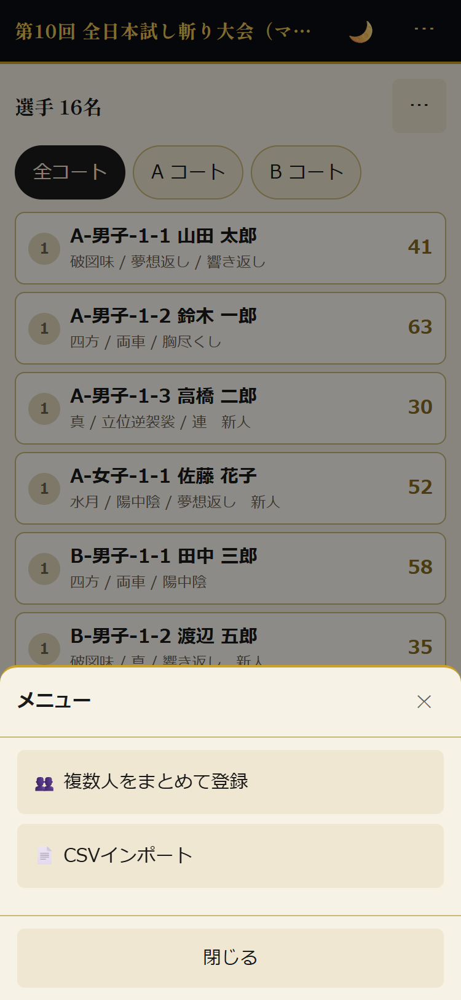
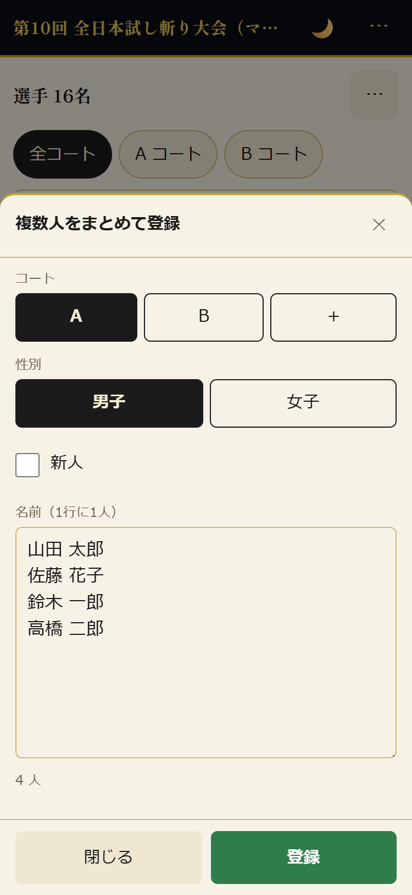
（c）CSV で読み込む
右上の ⋯ → 📄 選手を CSV から取り込む を押し、ファイルを選びます。
いちばん簡単な形は次の7列です。1行目は見出し行で、2列目が「コート」であれば、この形として読みます。
- 性別は 女 女子 ○ F f のいずれかで女子、ほかは男子になります。
- 新人は ○ 1 はい 新人 のいずれかで新人になります。
- 順番はサーバーが自動で採番します。CSV に書く必要はありません。
- コート名は32文字までです。- は使えません。未分類 も使えません。
右に ゼッケン 級位段位 レンタル、さらに 二巡目技① 二巡目技② 二巡目技③ の列を足せます（合わせて 13 列。PC 用の貼り付けと同じ並びです）。二巡目の技は、二巡目で形を変える選手だけ書きます（空なら一巡目と同じ形。書くときは 3 つとも）。二巡目技1 の書き方の見出しも読めます。
運営画面の結果確認の CSV エクスポート が出す形（選手名 順番 … の 9 列・12 列・15 列・18 列、決戦（今は使いません。列は互換のため残し、書き出しは空、取り込みでは読み飛ばします） 一巡目の行 が付いた 20 列、そして最後に 二巡目 技 1 二巡目 技 2 二巡目 技 3 が付いた 23 列）もそのまま読み込めます。以前の 20 列のファイルも読めますが、その場合は二巡目の形の申請は空になります（二巡目の行の形は 3〜5 列目の技で往復します）。この形では順番は CSV の値をそのまま使います。1 行目の見出しを厳密に照合します。読み込める形でないと CSV の 1 行目（見出し）が、読み込める形式と合っていません。 と出て、何も読み込みません。
文字コードは UTF-8 を先に試し、化けていれば Shift_JIS で読み直します。どちらでも読めないときは CSV の文字が化けていて読み取れませんでした。 と出ます。Excel なら CSV UTF-8（コンマ区切り） で保存し直してください。
すでに選手がいる大会に読み込むと、取り込む直前にサーバーの選手数を読み直してから、読み込み方を選ぶ画面が出ます（画面の表示が古くても、いま何名いるかで聞きます）。
- 追記する — 既存の選手を残して、CSV の選手を足します。同じ順番の選手がいると重複します。
- 置き換える（既存 n 名を消す） — 既存の選手を全部消して、CSV の内容だけにします。採点結果も消えます。押し間違えないよう、危ない方は赤いボタンで、何が消えるかをボタンに書いてあります（OK で進む形にはなっていません）。
- 置き換えで採点済みの選手がいるときは、失われる人数を示してもう一度確かめます。他のコートの採点も一緒に消えます。
- 確かめている間に他の端末が選手を足したり消したりすると 取り込む間に選手の人数が変わりました と出て、何も消さずに読み直します。内容を確かめてからやり直してください。
- 二巡目の行がある大会では、置き換え・追記とも結果確認の CSV エクスポート（23 列。以前の 20 列も可）で書き出したファイルだけ取り込めます（一巡目とのつながりを保つため）。ほかの形は 二巡目がある大会には、結果確認の CSV エクスポートで書き出した形のファイル（23 列。以前の 20 列も可）だけ取り込めます（置き換え・追記とも）。 と出ます。
（d）PC の表に打ち込む・Excel から貼り付ける
PC 用の運営画面（desk.html）の 選手登録 の区画は、1人1行の編集できる表です。名前・ゼッケン・級位段位・レンタル・コート・性別・新人・技1〜3のセルと、二巡目の形 の列をその場で直せます。直したセルから離れる（Tab や Enter、ほかの場所をクリック）と、その項目だけが保存されます。
表の上には ゼッケン未入力 3 級位段位未入力 1 レンタル不可の形 2 同じ形 2 回 1 のように、このままでは試合を開始できない件数が赤く出ます。該当するセルは赤い枠になります（必須なのに空は点線、レンタルの選手が選べない形は実線）。0 件になると消えます。二巡目の形の申請に誤りがあるときも 二巡目: 表に無い技 二巡目: 同じ形 2 回 二巡目: レンタル不可の形 のように出て、二巡目の形 のセルが赤い枠になります。
二巡目の形の列は、大会の前に二巡目の形の申請を受けているときに使います。二巡目で形を変える選手だけ入れ、空なら一巡目と同じ形で二巡目を行います。
- 申請が無い選手は薄い字で 一巡目と同じ、あれば 袈裟・逆袈裟・水平 のように形が出ます（空の枠は —。列に収まらないときは末尾が … になり、マウスを載せると全部出ます）。二巡目の行は — で、押せません（その行の 技1〜3 が二巡目の形です）。
- セルを押すと 二巡目の形（空 = 一巡目と同じ） の小さな窓が開き、技1〜3 を選べます。申請が無いと、一巡目の形が下書きとして入った状態で開くので、変える枠だけ選び直して 保存 を押します。一巡目と同じにする で申請を取り消せます。やめる で閉じます。3 つは1回でまとめて保存します。
- 一巡目と3つとも同じ形を入れて保存すると、「申請なし」として保存されます。あとで一巡目の技（技1〜3）を直しても、申請はそのまま残ります（一巡目の技を申請と同じ形にしても、申請は消えません）。
- 二巡目の行ができたあと（二巡目準備以降）に直すと、二巡目の行の技も同じに書き換わります。二巡目の行が採点済みなら 二巡目の行は採点済みです（n点）。… の確認が出ます。
- ＋ 行を追加 で末尾に空の行が増えます。名前を入れて確定すると登録されます。コート・性別・新人は1つ上の行と同じものが入ります。追加途中の行の 二巡目の形 は （追加後に設定） と出ます。登録してから、その行の列で入れてください。
- 見出しの ▼ で列ごとに絞り込めます（コート・性別・新人・巡・技が未入力の行だけ・二巡目の形の 申請あり / 一巡目と同じ。申請の入力漏れを確かめるのに使えます）。名前は ▼ の中の検索欄で部分一致します。
- 表の上に 表示 n / N 名 と出ます。絞り込み中は 絞り込みを解除 で戻せます。
- 並べ替えは見出しの文字（▼ の外）をクリックします。
- 行の ⋯ から削除できます。採点済みの選手を消すときは確認が出ます。
Excel の名簿からまとめて入れるときは 📋 貼り付けて追加 です。
試技順（No.）の入れ替え — PC 用の選手登録では、行の左端の ⋮⋮ を掴んで同じ帯（部×コート×巡目）の中で上下に動かすと、落とした位置に合わせて No. を 1 から振り直します。帯をまたいで落とすことはできません（コートは行の欄で変えます。性別は変えられないので、間違えたときは行を削除して正しい部に追加し直します）。掴めるのは No. 順で絞り込みをしていないときだけです。採点が始まってから入れ替えると 採点中です。順番を入れ替えると採点画面の呼び出し順（No.）が変わります。入れ替えますか？ と確認が出ます。表の帯は「男子の部 A コート 一巡目」のように部・コート・巡目で分かれ、帯の中で No. が 1 から並びます。
- Excel で 名前・コート・性別・新人・技1・技2・技3・ゼッケン・級位段位・レンタル・二巡目技1・二巡目技2・二巡目技3 の 13 列を、この順に並べて選び、コピーします。右側の列は無くてもかまいません（10 列までのこれまでの名簿もそのまま読めます）。二巡目の技は、二巡目で形を変える選手だけ書きます（空なら一巡目と同じ形。書くときは 3 つとも）。
- 📋 貼り付けて追加 を押し、開いた欄に貼り付けます。
- 読み取った内容が一覧で出ます。1行目が「名前」で始まっていれば見出しとして飛ばします。
- 技得点表に無い技名は赤く示されます（二巡目の技も同じです。下見の行に 二巡目: 袈裟・逆袈裟・水平 のように出ます）。その行は送られないので、技名を直してから貼り直してください。
- 件数を確かめて 登録 を押します。
名前だけの行でも登録できます。足りない列は 性別＝男子・新人＝なし・技＝空 として読みます。コートの列が空の行には、貼り付け欄の上の コートが空の行に使うコート で選んだコートが入ります（下見の一覧では、補ったコートが薄い字で出ます）。コートを選んでいないと、コートの列が空の行は赤くなって登録できません。男女で配点が分かれる技は 破図味 のように接尾辞なしで書けます（行の性別で解決します）。
- タブ区切り（Excel からのコピー）とカンマ区切りのどちらでも読めます。
- 性別は 女子 女 F で女子、ほかは男子です。新人は 新人 ○ 1 true で新人です。レンタルは レンタル あり ○ 1 true でレンタルです。
- ゼッケンは数字だけです（数字以外は ゼッケン番号は数字で で断られます）。貼り付けた行どうしの重複も、すでに登録されている選手との重複も断ります。
- レンタルの行に抜刀状態でない形が書いてあると、その行は赤くなって登録できません。
- 順番はサーバーが自動で採番します。
- 1行でも不正があると、1人も登録されません（半分だけ入った状態を作りません）。
技の選び方
技の枠（① ② ③）をタップすると、技を選ぶシートが開きます。
- 上の欄に技名を打つと絞り込めます（技名で絞り込み）。
- 見出し行は 技名 初太刀 二ノ太刀 三ノ太刀 四ノ太刀 で、右側の数字がその太刀の配点です。
- — はその太刀を打たないという意味です。採点画面でも灰色になり、押せません。
- いちばん上の （この枠を空にする） を選ぶと、その枠を空にできます。
技は一巡目・二巡目とも3つ入れるのが基本です。事情があれば2つでも採点はできます。
ここに出る技と配点はその大会の技得点表のものです。直すときは、運営画面の右上 ⋯ → 🗒 技得点表（選択中の大会のものが開きます）、または採点画面の上のリンク 技得点表 から開きます。PC 用は左の 技得点表 です。
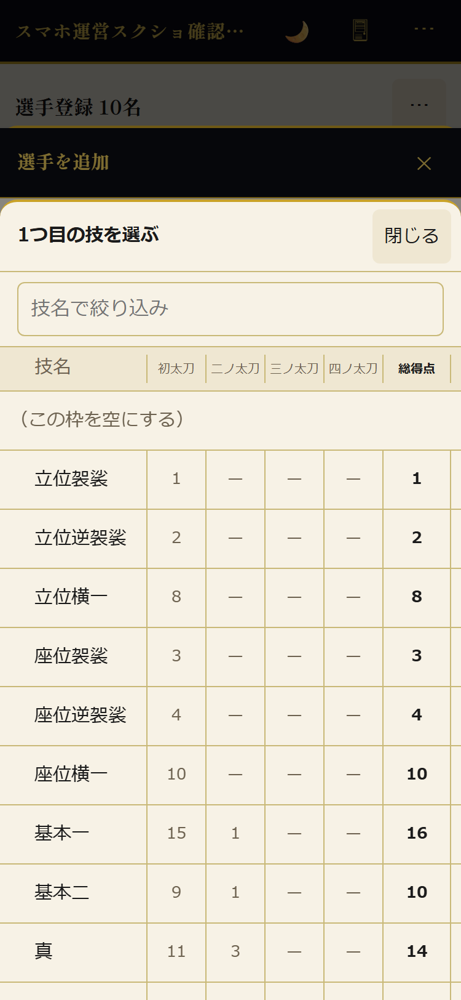
選手を探す（絞り込み・並べ替え）
表の上のチップで絞り込めます。全コート / A コート、男女 / 男子 / 女子、全巡 / 1巡 / 2巡 は1つを選びます。新人 と 技未入力 は押すたびに入・切が切り替わります。条件は重ねられます（例: A コート と 技未入力 で、Aコートで技がまだ入っていない人だけ）。
検索欄に名前の一部を入れると、その文字を含む人だけになります。姓と名の間の空白は無視します。
表の見出し No / 名前 / 得点 を押すと並べ替えられます。もう一度押すと逆順です（▲ が昇順、▼ が降順）。1巡 に絞って 得点 を降順にすると一巡目の順位、全巡 のまま降順にすると巡目をまたいだ順位になります。
選手を直す・消す
選手登録タブの行をタップすると 選手を編集 のシートが開きます。名前・コート・性別・新人・技を直して 保存 を押します。
- スマホ用のシートは、開いた時点から変えた項目だけを保存します（ほかの端末がその間に直した項目を、古い値で上書きしません）。
- 二巡目の技の欄は一巡目の行（と追加のシート）にだけあります。二巡目の行の編集シートには出ません（その行の「技」が二巡目の形です）。二巡目の行ができたあとで申請を直すと、二巡目の行の技も同じに書き換わります（二巡目の行ができています。ここで変えると二巡目の行の技も変わります。 と注記が出ます）。二巡目の行が採点済みのときは 二巡目の行は採点済みです（n点）。二巡目の形を変えると得点が変わる可能性があります。 と確認が出ます。承諾して保存したら、採点画面でその選手の二巡目を開き 計算し直して保存 を押してください。
- 二巡目の行では、名前・性別・新人は直せません（欄が灰色になり、押さえると 一巡目の行で直してください と出ます）。一巡目の行で直すと、二巡目の行にも同じ内容が写ります。順位も一巡目の行ごとに合算されるので、同じ選手が 2 行に割れることはありません。
- 採点済みの選手の性別や技を変えると この選手は採点済みです（n点）。得点が変わる可能性があります。 と確認が出ます。承諾すると保存されますが、保存済みの得点はサーバーでは計算し直されません。採点画面でその選手を開いて 計算し直して保存 を押してください。画面が古くて確認が出なかったときも、サーバーが断って同じ確認を出し直します。
- 一巡目の終了のあとで一巡目の選手を追加すると、採点するには、試合進行で一巡目に戻して終了し直す必要があります。 と案内が出ます（追加した選手は、それまで採点も二巡目への組み込みもされません）。
- 同じシートの この選手を削除 で消せます。一巡目の選手を消すときは 二巡目の行は残ります。 と断りが出ます。
- 採点済みの選手を消すときは 削除すると採点結果は戻せません。 ともう一度確認が出ます。
順番の付きかた
順番は コート-性別-巡目-番号 の形で自動で付きます。たとえば A-男子-1-1 は「A コートの男子、一巡目の1番」です。
二巡目の並び順は一巡目と変わります。§2 の「二巡目の並び順」を見てください。
2. 採点の進行
端末の役割（A・B の2コートの例）
運営者は1台のスマホで運営画面を、各コートは1台ずつのタブレットで採点画面を開きます。
当日の流れ（7つのボタン）
当日は 次へ進む のボタンを、順に押していくだけです。PC 用では左の区画の 試合進行（または 選手登録）を開き、先頭の工程表の下にあるボタンで進めます（二巡目準備のときは 二巡目の形登録 の区画の先頭にも同じ工程表が出て、そこからも 二巡目を開始 ▶ を押せます。スマホ用では 試合進行 タブの上です）。上部の状態バーは表示だけで、ボタンはありません。
- 試合開始 ▶ — 試合を開始しますか？ の確認で OK（技が未入力の選手がいるときは ⚠ 技が未入力の選手が m名います。このまま試合を開始しますか？ と注意が出ます）。確認には二巡目の形の申請の人数も出ます（二巡目の形の申請: 3名（ほかの 17名は一巡目と同じ形で二巡目を行います）。申請が無いときは 二巡目の形の申請はありません（全員、一巡目と同じ形で二巡目を行います））。人数を知らせるだけで、警告ではありません。一巡目 進行中 になり、採点画面が別のウィンドウで開きます。
- 基本情報 で ゼッケン番号を必須にする にしていて、一巡目にゼッケンが空の選手がいる。
- 級位・段位を必須にする にしていて、一巡目に級位・段位が空の選手がいる。
- 真剣レンタル の選手に、抜刀状態 でない形が入っている。
- 一巡目に、回数制限 が「あり」の同じ形を2枠以上選んでいる選手がいる。
- 一巡目に、技得点表に無い技を選んでいる選手がいる（採点画面でその行が採点できなくなるため）。
- 二巡目の形の申請に、技得点表に無い技・回数制限が「あり」の同じ形の2回以上・レンタルの選手が選べない形（抜刀状態でない形）がある選手がいる（二巡目の行に流れ込む前、一巡目のうちに直させるため。二巡目の形が技得点表に無い技: 1 名（山田 太郎） のように出ます）。直す場所は選手登録の 二巡目の形 です。
- コート別の状況を見る — 試合進行 の区画に、コートごとのカードが並びます（下の節）。
- 一巡目を終了 ▶ — 全コートの採点が済んだら押します。押した時点で二巡目の行が自動でできます（形は申請された二巡目の形。申請の無い人は一巡目と同じ形。試技順はコートごと・部ごとに一巡目の得点が低い順）。申請があるときは確認に 二巡目の行は、申請された二巡目の形（申請の無い人は一巡目の形）で作ります。 と出て、押したあとのメッセージに 申請の形 3 名 と出ます。
- 形を確かめる・直す — PC 用は左の 二巡目の形登録 の区画（二巡目準備のときだけ出ます）の表で、申請された二巡目の形を確かめ、当日の変更があった選手だけ直します（下の節）。
- 二巡目を開始 ▶ — 二巡目の行の技に誤り（技得点表に無い技、回数制限が「あり」の同じ形の2回以上、レンタルの選手が選べない形）があると開始できません。PC 用では 二巡目を開始 ▶ が押せなくなり、工程表に 二巡目を開始できません。形登録で直してください。（二巡目の形登録 の区画では …下の表で直してください。）と人数・名前が出ます。スマホ用では押したときに同じ文言で止まります（PC 用でも、画面が古いまま押したときは押したときに止まります）。確認には 二巡目 20名のうち、一巡目から形を変える選手: 3名 と出ます。押すと 二巡目 進行中 になります。コートの端末で大会を選び直すと二巡目の選手が出ます。二巡目 進行中 のあいだ、工程表の下（スマホ用は状態の1行の下）に 暫定ベスト4（合計）: 男子08（120点）・男子03（110点）・男子01（98点）・男子05（98点） 残り 6 名 の1行が出ます（一巡目＋二巡目の合計の上位4名と、二巡目がまだ確定していない一般男子の人数。採点が確定するたびに動きます。「ベスト4」）。終盤に、ベスト4 に入りそうな選手を最後のほうに斬らせたいときは、運営者が採点画面の選手一覧（または選手登録）でドラッグして試技順を入れ替えます。
- 二巡目を終了 ▶ — 全コートの二巡目の確定がそろったら押します。確認には二巡目の未確定の人数が出ます。二巡目終了 になり、試合進行の工程表の下に3部門（一般男子・新人枠・一般女子）の上位3名が出ます。結果確認で全順位 → で全順位へ移れます（自動では移りません）。上位3名の上には ベスト4（合計）: … の1行も出ます。
- 結果を確定して表彰へ ▶ — 得点・選手・技を編集できなくなります。最終結果 になり、試合進行に表彰の区画が出ます（下の節）。そのあと アーカイブ ▶ で片づけます。
試合進行（PC 用）— 工程表とコート別の状況
PC 用の 試合進行 は進み具合を見て、段階を進める区画です。形の登録（二巡目の技の直し）は別の区画 二巡目の形登録 で行います。その区画の先頭にも同じ工程表が出るので、形を確かめ終えたら、その場で 二巡目を開始 ▶ を押せます。
いちばん上に工程表が出ます。① 一巡目 → ② 二巡目の形登録 → ③ 二巡目 → ④ 結果・表彰 の4段で、いまの段が金色に塗られ、その下の1行にいまやることが出ます。
- 工程表の下に、その段階で押せるボタンだけが並びます（試合開始 ▶ などの進むボタン、◀ …に戻す。二巡目準備のときは 二巡目を行わず最終結果へ も）。確認の文言は今までと同じです。
- 状態との対応は、① 一巡目 進行中、② 二巡目準備（形の登録）、③ 二巡目 進行中、④ 二巡目終了・最終結果・アーカイブです。準備中は工程表のどの段も塗られません（①の前）。
- ② のときは1行の右の 形登録へ → で 二巡目の形登録 の区画へ（形登録の区画の工程表では、右の 試合進行へ → で戻れます）、二巡目終了・最終結果のときは 結果確認へ → で結果確認へ移れます。
- CSV エクスポートは 結果確認 にあります（この区画の ⋯ はなくなりました）。
工程表の下は、状態によって次のものが出ます。
- 二巡目 進行中 — 工程表の1行は 各コートで二巡目を採点しています。全員が斬り終わったら「二巡目を終了 ▶」を押します。 です。工程表の下に 暫定ベスト4（合計）: … 残り n 名 の1行。コートのカード（男子の部・女子の部）の下に 暫定ベスト4（合計） の表（順位・名前・一巡目・二巡目・合計）が出ます。
- 二巡目終了 — 3部門（一般男子 新人枠 一般女子）の上位3名（名前と合計点）を横3列の小さな表で。同点は同順位なので、4名以上並ぶことがあります。結果確認で全順位 → で結果確認へ。押すボタンは工程表の中の 結果を確定して表彰へ ▶ です。
- 最終結果 — 表彰の区画。上位3名の表と、発表モードで開く 共有リンクをコピー 成績表（HTML）を保存 のボタン（結果確認と同じ処理です）。自動で結果確認へは移りません。得点・選手・技は編集できません。
- 順位が取れなかったときは 順位を読み込めませんでした。↻ 最新に更新 と出ます。
- 二巡目終了 以降は、コートのカードが 二巡目の明細 に折りたたまれます（開くと今までと同じカードが出ます）。
コートごとのカードは、1コートにつき1枚ずつ並びます。
- A コート — コートの名前。
- 確定 5 / 8 — いま採点している巡目で、採点画面の 確定 まで済んだ人数。全員確定すると緑になります。
- いま採点中: 山田 太郎 — そのコートの端末が開いている選手です。誰も開いていなければ 待機中。
- 採点画面を開く — そのコートの採点画面を別のウィンドウで開きます。同じコートは同じウィンドウを使い回します。
- 📺 配信用ボードの URL をコピー — そのコートの配信用ボード（§4。
board.html#（トークン）/A）のアドレスを写します。参加者に配る閲覧専用のアドレス（共有リンク）は 結果確認 の 共有リンクをコピー にあります。 - 📱 この端末を招待（QR） — そのコートの採点端末を QR で登録する鍵を出します（下の「採点端末を QR で招待する」）。配信用ボードの URL と違い、採点が書き込める鍵です。
開いた採点画面の URL には大会とコートが入っています（scoring.html#event/大会ID/コート）。この URL のおかげで、当日はタブを閉じたり端末を再起動したりしても、同じ大会・同じコートに戻れます。
採点端末を QR で招待する
コートの端末に運営のパスワードを配らなくても、そのコートの採点だけができる端末を QR で登録できます（PC 用の運営画面から行います）。登録した端末は、その大会・そのコートの採点画面だけが開きます。
- 運営画面（PC 用）の 試合進行 を開き、コートのカードの 📱 この端末を招待（QR） を押します（全コートで使える鍵にもできます）。
- ラベル（例: A コート タブレット）・期限・端末の数を決めて 発行する。期限は大会の日の終わり（日本時間 23:59）が標準です。端末の数は、この QR で登録できる台数の上限です（標準は 2 台、最大 5 台）。
- 画面に QR が出ます。会場で、タブレットのカメラに読み取らせます。開いた画面で この端末を登録する を押すと、登録が済んで採点画面に移ります。
- 採点画面をSafari（ブラウザ）でブックマークしておくと、次からそこから開けます。QR を読み取り直す必要はありません。
/join を。iPad・iPhone では、ホーム画面に追加したアプリはブラウザと登録（Cookie）が別になることがあり、採点画面を追加すると、開いたときに運営の ID・パスワードを聞かれます。ホーム画面に置きたいときは /join のページを追加し、開いたら運営からもらった URL を貼り付けて登録してください（登録すると採点画面に移ります）。ID・パスワードの画面が出てしまったら、閉じると出る案内から /join に進めます。試合進行の下の 招待した端末 に、発行した招待と登録された端末（機種・登録した時刻・最後に通信した時刻）の一覧が出ます。
- この端末を外す — その 1 台だけを外します。知らない端末が登録されていたら外してください。タブレットを失くしたときも同じです。
- 取り消す — その招待で登録した端末をすべて外し、その QR も使えなくします。大会を削除したときも自動で取り消されます。
- 外された端末は、次の保存から採点できなくなります。端末に残っている未送信の採点は消えません。新しい QR で登録し直すと送られます。
- 一覧は開いたときと ↻ 更新 で読み直します（自動では変わりません）。
運営のパスワードで開いている端末（今までどおりの使い方）は、何も変わりません。
採点画面の見方
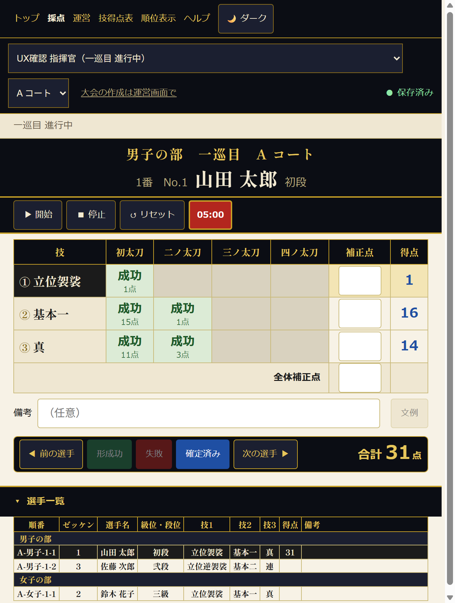
- ①大会バー — 大会とコートを選びます。コートは必ず 1 つ選びます（「全コート」の選択肢はありません。大会を選ぶと先頭のコートが入ります）。右の ● 保存済み がサーバーへの保存の様子です。大会の作成と削除は運営画面にあります（バーの 大会の作成は運営画面で のリンクから開けます）。選択肢にはアーカイブ済みの大会は出ず、採点できる大会が先頭に並びます。
- ②選手の帯 — 1行目に「男子の部 一巡目 A コート」（部・巡目・コート）、2行目に「1番 No.19」のような番号と選手名、右に級位・段位が出ます。どの部・巡目・コートを採点しているかを常にここで確かめられます。
- ③タイマー — ▶ 開始 ■ 停止 ↺ リセット と残り時間。5分から0へ向かって数え、選手を切り替えると自動で 05:00 に戻ります。
- ④採点表 — 技名をタップするとその行が選ばれます（黒く反転します）。太刀のセルは押すたびに 未 → 成功 → 失敗 → 未 と変わります。灰色のセルは、その技で打たない太刀です。行がまるごと灰色で得点の欄も空のときは、その技名が技得点表に無い状態です（配点を引けず0点のままになります）。§5 の「技が見つからない」を見てください。補正点 はその技だけに効き、マイナスも入れられます。得点 はその行の合計で、こちらは自動です。胸尽くしなど「減点初太刀」が設定された技は、初太刀のセルだけ 未 → 成功 → 減点 → 失敗 → 未 と一段増えます。減点（黄土色。切先が鞘から抜けていたときの成功）は失敗ではないので、後ろの太刀は無効になりません。得点はその技に設定した「減点初太刀」の点になります。
- ⑤全体補正点・備考 — 全体補正点 は採点表の最終行（補正点 の列の真下）にあり、選手全体に効きます。備考 は得点に影響しません（200文字まで）。右の 文例 ボタンを押すと「間合い確認・素振りをしたため無効」などのよくある理由を一覧から選んで備考の末尾に追記できます（2つ目以降は「、」で区切られ、同じ文例は二重に足されません）。
- ⑥操作区画 — ◀ 前の選手 形成功 失敗 確定 確定して次へ ▶ 次の選手 ▶ が一列に並び、右端に 合計 が出ます。確定して次へ ▶ は 確定 と 次の選手 ▶ を1回で行います（確定できない理由があれば留まります。確定済みの選手では次へ移るだけで、取り消しはしません。最後の選手では確定だけします）。形成功 失敗 はどちらも選択中の行にだけ効きます。形成功 は打つ太刀を全部「成功」に、失敗 は最初の「未」のセルだけを「失敗」にします（すでに成功・失敗のセルは変えません）。どちらも押すと次の技の行が自動で選ばれるので、続けて押していけば 3 つの技を採点できます。確定 を押すと 確定済み になり、得点と合計が青くなります。得点は確定して初めて、選手一覧・運営画面の試合進行・順位に反映されます（確定前の途中の値は出ません）。未の太刀が残ったまま確定しようとすると 未の太刀が残っています。すべて失敗にして確定しますか？ と聞かれ、OK で残りの「未」を失敗にしてから確定します。得点に関わる編集をすると、自動で確定が外れます。確定せずに 次の選手 ▶ などで移ろうとすると この選手の採点がまだ確定されていません。確定して次へでよいですか？ と聞かれ、OK で確定してから移ります（キャンセルでその選手に留まります）。技が入っていないなど確定できない選手では 確定せずに移動しますか？ と聞かれます。
- ⑦選手一覧 — コートごとの一覧です。どの端末でも、採点画面の下にコートの一覧が縦に並びます。各コートの選手が、男子の部・女子の部の帯で分かれて並びます。列は 順番・ゼッケン・選手名・級位・段位・一巡目・二巡目・備考 です（技は出ません。合計と順位は下の ⑧順位表で見ます）。得点は確定済みの巡目だけに出ます（二巡目の行には同じ選手の一巡目の得点も出ます）。行をタップするとその選手に切り替わります。運営の端末（運営のパスワードで開いた画面）では、各行の左端に ⋮⋮ が出ます。⋮⋮ を押さえたまま上下にドラッグして離すと、試技順を入れ替えられます（指でもマウスでも同じです）。入れ替えられるのは同じコートの同じ部・同じ巡目の中だけで、別の部や巡目の所で離すと元に戻ります（PC 運営の選手登録の表では、同じ部・同じ巡目なら別のコートの帯にも落とせて、コートの移動になります）。離すとすぐ保存され、順番の番号が上から振り直されます（採点中の選手はそのままです）。二巡目の終盤に、ベスト4 に入りそうな選手を最後のほうに斬らせたいときもこれで並べ替えます。QR で登録した採点専用の端末には ⋮⋮ は出ません。どの端末でも採点中のコートだけが開いていて、他のコートは見出し（コート名と人数）だけです。見出しをタップすると開きます（もう一度タップで閉じます）。コートを切り替えると、新しい採点中のコートだけが開いた状態に戻ります。採点中のコートの見出しには 採点中 の印が付き、今の選手の行の色が変わるのはこの一覧だけです。他のコートの一覧の行をタップすると、採点するコートがそのコートに切り替わり、その選手が開きます（未確定の選手から離れるときの確認は、選手を移るときと同じです）。ただし QR で登録した採点専用の端末（1 コートの鍵）では、他のコートの一覧は 見るだけ で、行をタップしても切り替わりません。
- ⑧順位表 — 一覧の下の 順位 の区画（注記 確定した得点の合計（同点は同順位））に、一般男子 新人枠 一般女子 の順位（順位・名前・合計）が出ます。各部門の見出しの右に 一巡目 12/17 のように、いまの巡目で確定した人数／その巡目の全員が出ます（順位表示ページにも同じ数が出ます）。二巡目の行ができてからは、各部門の見出しに 残り n 名（二巡目が未確定の人数）、各行の右に ベスト4 の列（1 字。凡例は表の下）が出ます: 確 確定（その部門で、残りの全員が全部成功しても 4 位以内）・可 可能性あり（自分の残りが全部成功すれば 4 位以内に入れる）・- 圏外（全部成功しても届かない）。まだ斬っていない人の合計には 85→170? のように、二巡目が全部成功したときの最大が付きます。並びは 一般男子・一般女子 が横、新人枠は女子の下です。部門ごとに判定します（新人枠は新人の中で、一般女子は女子の中で）。満点は技の配点の合計で、補正点は見ません。数え方は結果確認と同じです（一巡目＋二巡目の確定した得点の合計。同点は同順位）。確定した得点のある選手だけが出ます（まだ斬っていない選手は出ません。結果確認は全員が出ます）。順位の番号は全員で付けたものなので、結果確認と同じ番号です。確定・取り消しのたびに動き、他のコートの確定も 10 秒ごとに取り込まれます（画面を見ている間だけ。一覧の得点も同じ）。今開いている選手の行は色が変わります（二巡目の行を開いているときも、その選手の行です）。QR で登録した採点専用の端末でも、全コートの選手の順位が出ます。横幅 600px 以上では 3 つが横に、スマホでは縦に並びます。名前が長いときは折り返します。確定した得点がまだ無いときは まだ確定した得点がありません、その部門に誰もいないときは まだいません と出ます。
採点は太刀の順番どおりに行います。 前の太刀（配点のある太刀）が 未 のままだと、後ろの太刀は薄く表示されて押せません。一ノ太刀から順に成功・失敗を付けていくと、次の太刀が押せるようになります。
一つの形で途中失敗したら、それ以降の太刀は自動で無効になります。 太刀を 失敗 にすると、同じ行のそれより後ろの太刀（配点のある太刀だけ）は押せなくなり、セルが灰色で「無効」とその太刀の元の点数（○ だったときの配点）が表示されます。無効になった太刀は0点として合計されるので、その形は最初の失敗より前に成功した太刀の点数（と補正点）だけが入ります。失敗を 成功 や 未 に戻すと、後ろの太刀も元どおり押せる「未」に戻ります（後ろの太刀に値が入っていた場合はまとめて「未」に戻ります）。失敗 ボタンは行のいちばん最初の「未」を失敗にするので、押すと残りの太刀がまとめて無効になります。以前に採点した選手を開き直したときも同じ規則で表示されますが、確定し直すまでは保存済みの得点は変わりません。
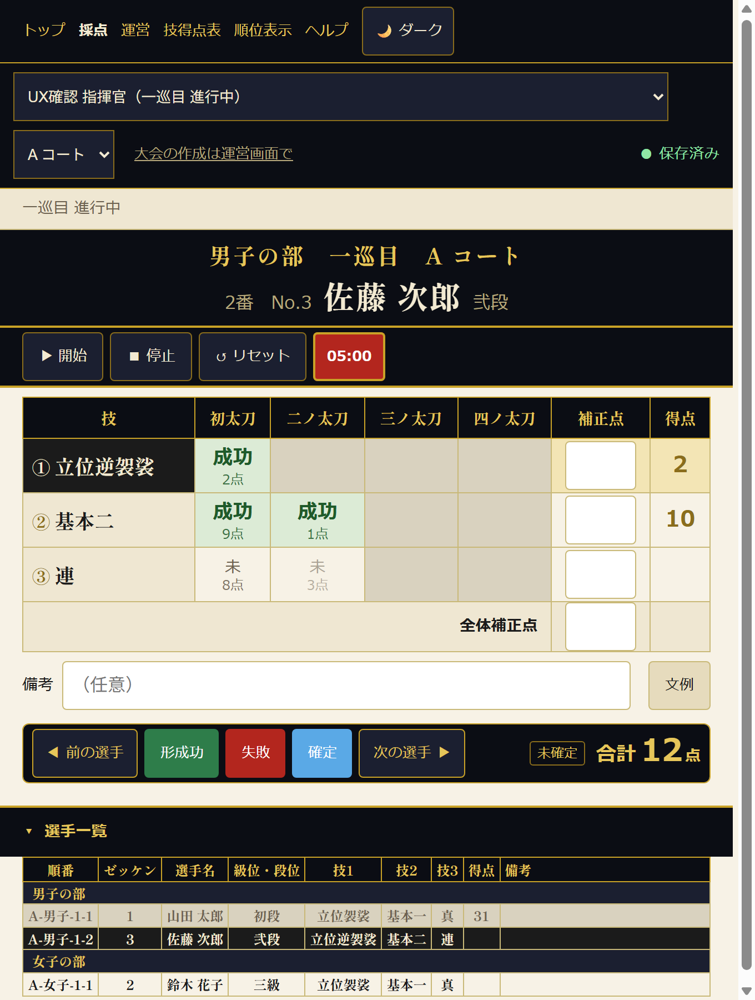
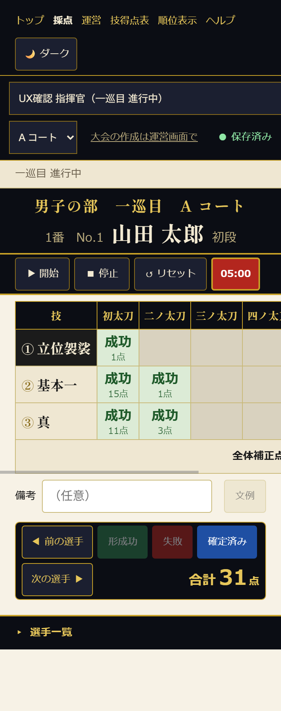
採点画面の状態バナー
採点画面では、大会を選ぶバーのすぐ下に今の状態が出ます。
- 一巡目 進行中 / 二巡目 進行中 — 採点できます。選手一覧にはその巡目の選手だけが並びます。
- この大会は「準備中」です。運営画面で「試合開始」を押すと採点できます。 — 運営画面で状態を進めてから、この画面で大会を選び直してください。
- この大会は「最終結果」です。得点は編集できません。運営画面で「戻す」を押すと編集できます。 — 確定後は、サーバーが得点の保存そのものを断ります。
採点できない状態のときは 確定 形成功 失敗 と得点・補正点・備考の入力が無効になります。前後の選手の移動・タイマーは使えます。
二巡目の形を直す
一巡目を終了 ▶ を押すと、二巡目の行が自動でできます（形は申請された二巡目の形。大会の前に申請を受けていない選手は一巡目と同じ）。ここでは申請どおりの形で良いかを確かめ、当日の変更があった選手だけ直します。
- 上に 確定 8 / 8 のように進み具合が出ます。全員終わっているか確かめてから 一巡目を終了 ▶ を押します。
- できた表で、申請された形（申請の無い人は一巡目の形）を確かめ、当日の変更があった選手の技を直します。3つ入れるのが基本です。
- 確かめ終えたら 二巡目を開始 ▶ を押します。
PC 用では、一巡目を終了すると左のメニューに 二巡目の形登録 が出て（二巡目準備のときだけ）、自動でその区画へ移ります。試合進行 の工程表の ② からは 形登録へ → で開けます。二巡目が 巡・順番・名前・ゼッケン・一巡目（一巡目の得点）・一巡目から・技1・技2・技3 の表（試技順）になります。順番はコート内の試技順で、ゼッケンとは別です。区画の先頭に工程表が出ていて、確かめ終えたらその 二巡目を開始 ▶ を押します（表の末尾の ▲ 確かめ終えたら、上の「二巡目を開始 ▶」へ を押すと、工程表までスクロールします）。二巡目を開始すると、自動で 試合進行 へ移ります。コート別の進み具合を先に見たいときは、工程表の右の 試合進行へ → です。
- 技は選ぶだけで保存されます。まだ空の枠は赤い枠で示されます。
- 行の右の 一巡目と同じ形に戻す で、その選手の一巡目の技がそのまま入ります。
- 表の上の 全員に一巡目と同じ技をコピー（n 名） は、技が空の選手が1人以上いるときだけ出ます。まとめて入れられます。対象は技が3つとも空で、まだ採点していない行だけです（途中まで入れた行と採点済みの行は上書きしません。件数がボタンに出ています）。
- 一巡目から の列は、二巡目の形が一巡目の形と違うかを示します。違えば金色の 変更、同じなら薄い 同じ、一巡目の行が無ければ — です。誰が形を変えるかを最終確認で一目で見られます。
- 二巡目 8名 技 未入力 3 一巡目から変更 3 で、技がまだの人数と、一巡目から形を変える人数が分かります。技未入力が 0 になると緑になります。申請どおりの形（2 本だけの申請なら 2 本）が入っている行は、3 つそろっていなくても 技 未入力 に数えません。
- ここで直した形は、その選手の二巡目の形の申請にも書き戻されます（選手登録の 二巡目の形 に出ます。一巡目と同じ形に戻すと申請は空に戻ります）。一巡目に戻して終了し直しても、直した形は残ります。
- 二巡目の技を3つとも空にすると、申請も空（＝一巡目と同じ）として扱われます。3つとも空の行は採点できないので、技 未入力 に数えられ、二巡目を開始する確認で知らせます。
- 申請の無い選手の一巡目の形を、二巡目の行ができたあとで直すと、まだ採点していない・一巡目と同じ形のままの二巡目の行も一緒に新しい形になります（採点済みの行と、形登録で別の形に直した行は変わりません）。
技が入ると、各コートの採点画面の選手一覧に二巡目の選手が並びます。
スマホ用の 試合進行 タブでも同じことができます。こちらは1人1枚のカードで、① ＋ ② ＋ ③ ＋ の枠をタップして技を選びます。カードの右上の小さな札 一巡目と同じ / 変更 は、一巡目の形と比べた結果です。一覧の末尾の ▲ 確かめ終えたら、上の「二巡目を開始 ▶」へ を押すと、先頭の段階表示（二巡目を開始 ▶ のボタン）までスクロールします。
スマホ用の 試合進行 タブには工程表はありません。上の 現在の状態 と次へ進むボタンの下に、その状態でやることの1行が出ます（ボタン名は PC 用と同じ 二巡目を終了 ▶ 結果を確定して表彰へ ▶ です）。
- 二巡目 進行中 — 暫定ベスト4（合計）: … 残り n 名 の1行が出ます（PC 用と同じ文言）。二巡目の選手は試技順に並びます。
- 二巡目終了 — ベスト4（合計）: … の1行と、3部門の上位3名が縦に3つの小さな表で出ます（最終結果の 表彰 も同じ）。結果確認で全順位 → で結果確認タブへ。
- 最終結果 — 表彰 の区画に、上位3名の表と 発表モードで開く 共有リンクをコピー 成績表（HTML）を保存 のボタンが出ます。
- 二巡目終了 以降は、選手のカードの一覧が 二巡目の明細 に折りたたまれます（タップで開きます）。
二巡目の並び順
二巡目の番号は、同じコート・同じ性別の中で、一巡目の得点が低い人から 1番・2番…と付きます。並べるのは確定済みの得点だけで（未確定は 0 点として先頭側）、同点のときは一巡目の試技順の番号（数として。10番は2番の後）で決まります。男子と女子は別々に数えます（例: A-男子-2-1 は A コートの男子で一巡目がいちばん低かった人）。一巡目とは出番の順が変わるので、番号を読み上げるときは気をつけてください。
並び方は画面で違います。コートの端末の選手一覧では二巡目の女子が先に並び、運営画面の試合進行タブ・選手登録タブ・PC の二巡目の形登録では男子が先に並びます。どちらも中身は同じで、出番はコートの端末の選手一覧の順です。
コートが決まっていない選手の二巡目は作れません。一巡目を終了すると コートが決まっていない（未分類の）選手が n 名います。二巡目には入っていません。 と知らせます。選手登録でコートを設定し、一巡目に戻して終了し直してください。
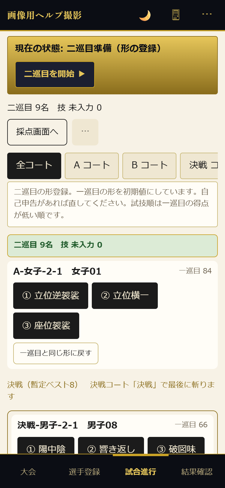
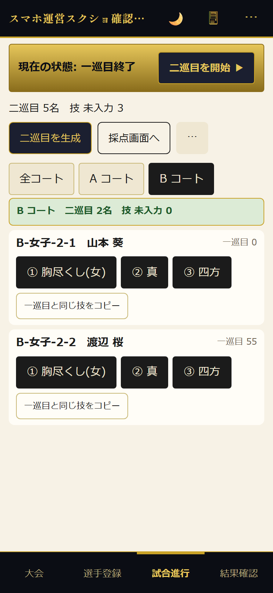
ベスト4
二巡目の試技順は、コートごと・部ごとに一巡目の得点が低い順です（システムが特別な組を作って最後に回すことはありません）。終盤にベスト4 に入りそうな選手を最後のほうに斬らせたいときは、運営者が採点画面の選手一覧（運営の端末の ⋮⋮）か選手登録で、ドラッグして試技順を入れ替えます。一巡目に戻して一巡目を終了し直すと、二巡目の試技順は一巡目の得点が低い順に付け直されます（手で入れ替えた順も付け直されます。二巡目にまだ誰も採点していないときだけ）。
ベスト4: 一般男子（新人を含む）の 合計（一巡目＋二巡目）の上位4名です。4位が同点なら同点の全員が入ります。合計0点以下の人は入りません。
- 二巡目の途中は暫定ベスト4です。二巡目の採点が確定するたびに動き、残り n 名（二巡目がまだ確定していない一般男子の人数）を添えます。二巡目がまだの人は二巡目が「—」で、合計は一巡目だけです。
- 全員が斬り終える（二巡目が全員確定する）か、最終結果にするとベスト4として確定します。
- 見られる場所: 試合進行（PC・スマホ）、二巡目終了・表彰の要約、共有リンク、発表モード の ベスト4。順位表の一般男子の上位4名（合計1点以上）と同じ人・同じ順位です。
通信が切れても続けられます
採点はいったん端末に貯めてからサーバーへ送ります。電波が弱くても、採点そのものは止まりません。
- ● 保存済み — サーバーまで届いています。
- ◌ 保存中… — いま送っているところです。
- ⚠ 未保存 3 件・再送中 — まだ届いていない採点があり、送り直しています。そのまま採点を続けてかまいません。
- 最初の失敗から30秒たっても残っていると、上に ⚠ サーバーに保存できていません のバナーと 今すぐ再試行 ボタンが出ます。通信を確かめてから押してください。
貯めた分は端末の中（ブラウザの保存領域）にも控えます。電池切れやアプリの再起動で消えることはありません。次にその端末で採点画面を開くと 前回未送信の採点 n 件を送信します。 と出て、自動で送り直します。
ほかの端末が書いた内容の取り込み
選手を切り替えたときと、ほかのアプリから採点画面に戻ってきたときに、サーバーから読み直します。運営画面や別のコートが付けた確定・備考・得点は、このときに画面へ入ります。
ほかの端末が同じ選手の採点を先に更新していると、保存のときに 別の端末で更新されています と確認が出ます。サーバーの内容を読み込む か この端末の内容で上書き かを選びます（あとで決める（端末に残す） を選ぶと、その採点は端末に残ったままになり、次にその端末で採点画面を開いたときや 今すぐ再試行 で送り直して、まだ衝突していればもう一度確認が出ます）。状態が進んで採点できなくなった巡目の採点も、同じように確認が出ます（ボタンは サーバーの内容を読み込む と この端末に残す）。
3. 得点の集計
得点の式
選手の合計 ＝ 技ごとの得点の合計 ＋ 全体補正点
- 「失敗」と「未」は0点です。打たない太刀（灰色のセル）も0点です。
- 補正点は整数です。マイナスも入れられます。
- 備考は得点に入りません。
技の配点を変える
配点は 技得点表（techniques.html）で大会ごとに変えられます。画面の上の 表示する対象 で大会を選び、✎ 編集する を押してから、技名ごとに 初太刀 から 四ノ太刀 までの点を入れ、保存 を押します。PC 用は左の 技得点表 から同じことができます。
- 雛形（新規大会の初期値） を変えても、すでにある大会の配点は変わりません。雛形はこれから作る大会に入る初期値です。
- 雛形に戻す を押すと、その大会の配点を雛形の内容で置き換えます。
- 選手が使っている技の名前を変えて保存すると、選手の技名も新しい名前に付け替えて保存しますか？ と聞かれます（使っている人数が出ます）。OK で選手の技名も新しい名前になり、キャンセル なら保存しません。使っている技を消す・別の技に置き換える保存と、雛形に戻す で使っている技が無くなる場合は、付け替えができないので保存されません（技の名前を残すか、先に選手の技を変えてください）。
- 別の大会からコピー で、ほかの大会の配点を表に読み込めます。保存 を押すまでは反映されません。
- 技名の隣の 合計点 は初太刀〜四ノ太刀の配点の合計で、自動計算です（編集はできません）。右端の 備考 は技ごとのメモです（100 文字まで。得点には影響しません）。
- 抜刀状態 は「抜刀してからの形」の印です。真剣レンタルの選手は、ここにチェックが付いている形だけを選べます。どの形を抜刀後とするかは大会ごとに運営が決めます（既定では 立位袈裟 立位逆袈裟 立位横一 座位袈裟 座位逆袈裟 座位横一 の6形に付いています）。
- 回数制限 が「なし」の形（編集ではチェックが付いている形）は、同じ巡の中で1人が何度選んでも構いません（既定では上の抜刀後の6形だけ）。「あり」の形は、1人の3枠のうち同じ巡で1回までです（§1 の「技の選び方」）。
- 減点初太刀 は、初太刀が減点扱いで成功したときの点です（胸尽くしなど、切先が鞘から抜けていた状態での成功）。空欄なら減点の状態そのものが出ません。数値を入れると、採点画面のその技の初太刀だけ 未 → 成功 → 減点 → 失敗 → 未 と一段増えます（既定では 胸尽くし(男) 胸尽くし(女) に4点）。
部門と順位
- 部門は 一般男子・一般女子・新人枠 の3つです。
- 新人にチェックが付いた選手は、新人枠にも、男子または女子の部にも入ります。どちらか一方ではありません。
- 順位は同じ選手の一巡目と二巡目の得点を足し合わせて付きます。つまり一巡目と二巡目の合計で並びます。
- 同点は同順位です。同点が2人いたら、次の人は3位になります。
確認する場所
- 順位に入るのは確定済みの得点だけです。採点画面で 確定 を押していない選手の得点は、順位・発表・共有・試合進行の表に出ません（2026-09-30 から）。
- PC 用運営画面の「結果確認」 — 一般男子 新人枠 一般女子 の3部門が横に3列で並びます。↻ 最新に更新 でサーバーの最新の順位を読み直します。
- スマホ用運営画面の結果確認タブ — 同じ内容が縦に並びます。最新に更新 で読み直します。
- 順位表示ページ（
ranking.html） — 開くと進行中の大会の順位が自動で出て、10 秒ごとに更新されます。別の大会は上の選択で切り替えます（選ぶとすぐ読みます）。並びは採点画面の順位表と同じ（一般男子と一般女子が横、新人枠は女子の下）で、見出しの「〜巡目 済み/全員」「残り n 名」とベスト4 の列も同じです。文字 のバーで表の大きさを変えられます（端末に覚えます）。HTMLダウンロード で1枚の成績表として保存できます。 - ダッシュボード（
dashboard.html） — 本部の PC 向け。採点画面をコートごとに、PC 運営の試合進行と順位表示を 1 画面に並べます（PC 運営の試合進行の 📊 ダッシュボード、またはトップの「ダッシュボード」から）。上の帯で大会を選び、👁 閲覧専用（既定。面の中は押せず、ホイールで中を動かせます）と ✎ 操作可能（採点・確定・工程表のボタンがそのまま使えます）を切り替えます。縮小率（50〜100%）は端末に覚えます。面の間の仕切りをドラッグすると大きさを変えられ、ダブルクリックで元に戻ります（位置も端末に覚えます）。面の右上の × でその面を閉じられ（残りの面が広がります）、上の帯の ▦ 面 のチェックで戻せます（「すべて表示」「並びを元に戻す」もここ）。面の見出しをドラッグして放す場所で並びが変わります: 別の面の真ん中なら 2 つの面の入れ替え、左右の端ならその面の隣に差し込み、上下の端ならその面の段のすぐ上／下に新しい段、画面の上端・下端の帯なら一番上／一番下の段（段はいくつでも作れ、空いた段は消えます）。▦ 面 の「横一列に並べる」「縦一列に並べる」「並びを元に戻す」も使えます。閉じた面と並びも端末に覚えます。操作可能では、未確定のまま別の面を触っても警告は出ません。操作可能にするのは、そのコートの採点を本部で行うときだけにしてください（コートの端末とダッシュボードの両方で同じ選手を採点すると、後から確定した側がサーバーに断られて読み直しになります）。 - 運営画面の「結果確認」 — CSV エクスポート（スマホ用は CSVエクスポート）で全選手の内訳を
players.csvに保存できます（PC・スマホとも。以前は試合進行の ⋯ にありました）。 - 運営画面の「結果確認」 — 成績表（HTML）を保存 で1枚の成績表を保存できます（PC・スマホとも）。採点画面には出力のボタンはありません。
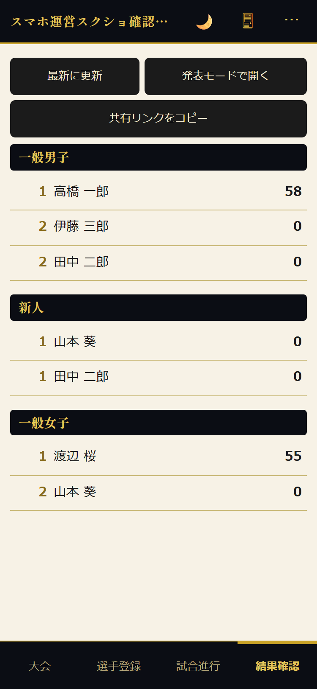
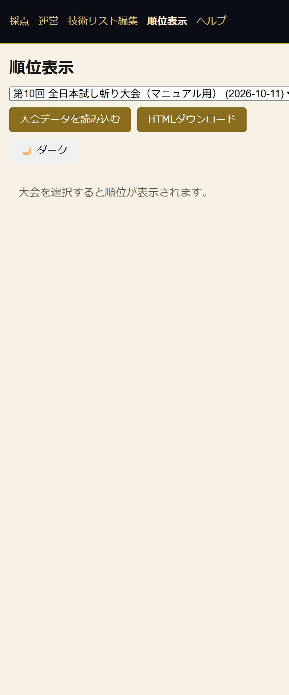
4. サイト掲載（共有・発表）
順位の見せ方は2通りあります。どちらも運営画面の 結果確認 タブから始めます。
参加者に配る（共有リンク）
- 運営画面の 結果確認（PC 用）または結果確認タブ（スマホ用）で 🔗 共有リンクをコピー を押す。
- 共有リンクをコピーしました（スマホ用は リンクをコピーしました）と出たら、その URL を配ります（コピーできない環境では、URL がそのまま表示されます）。
- URL は
share.html#（トークン）の形です。大会ごとに1本で、何度押しても同じ URL が返ります。 - 受け取った人は、ログインなしで順位だけを見られます。採点や書き換えはできません。
- ページを開いたままにしておくと、60秒ごとに自動で最新の順位に変わります。配り直す必要はありません。
- 二巡目 進行中 から（最終結果・アーカイブでも）、部門ごとの順位の上に 暫定ベスト4（合計） 残り n 名 の表が出ます（全員が斬り終えると ベスト4（合計））。名前の下に一巡目・二巡目の得点が小さく出ます。二巡目準備（形の登録）までは出ません。
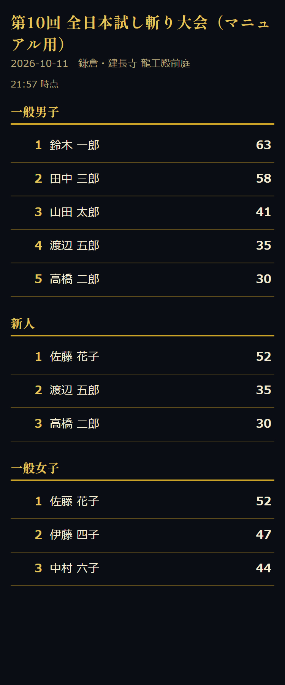
会場の大画面で見せる（発表モード）
結果確認タブで 発表モードで開く を押すと、新しいタブで発表モードが開きます。会場のプロジェクターやテレビにつないだ端末で押してください。
上に 掲示 発表 ベスト4 更新 全画面 のボタンがあります。開いた時点は、大会の状態によらず 掲示 です（ほかのモードへ自動では切り替わりません）。
掲示
- 部門ごとの順位をそのまま映します。上位3人は大きく出ます。
- 画面をタップするか → キーで次の部門、← キーで前の部門に移ります。
- 60秒ごとに順位を自動で取り直します。採点中に出しておけば、そのまま更新されます。
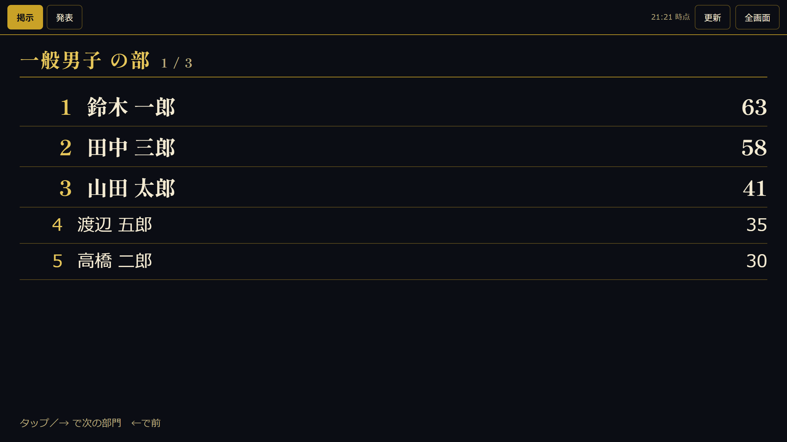
発表
- 発表 を押すと、まず 部門を選んでください が出ます。部門のボタンを押します。
- 一覧は掲示と同じく上から1位の順に並び、名前と点は伏せてあります。タップするたびに、いちばん下（最下位）から1人ずつ開き、最後に上の1位が開きます。
- 全員開き終わると、次の部門に進めます。
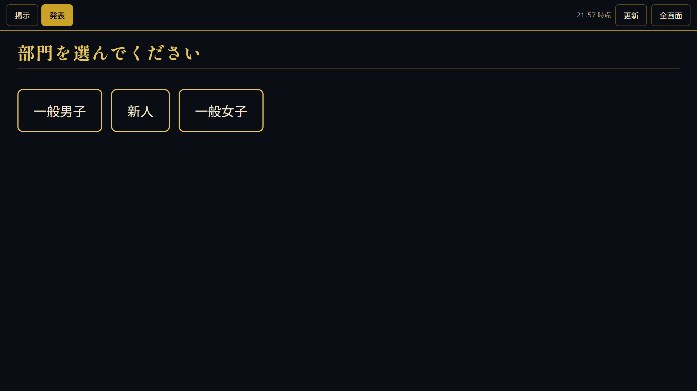
ベスト4
- ベスト4 を押すと タップで 4位から発表します と出ます。画面をタップするか →・スペースキーで、4位 → 3位 → 2位 → 1位 の順に出ます（カウントダウン）。← キーで1つ戻せます。
- 1人ごとに、順位・名前・合計（大きく）と、一巡目・二巡目の得点が出ます。出し終えた人は上に積まれ（最後は1位が一番上）、いま出した人が大きく強調されます。
- 同点の人は同じ順位で同時に出ます（例: 3位が2人なら、3位の2人が一緒に出ます）。
- 全員出し終えると 以上がベスト4 です と出ます。
- 二巡目がまだ全員確定していないときは、見出しが 暫定ベスト4 になり、残り n 名 が小さく添えられます（リハーサルや途中経過の発表に使えます）。全員確定するか最終結果にすると、見出しが ベスト4 発表 になります。
- 60秒ごとに自動で取り直します。発表の直前には 更新 を押してください。
YouTube 配信（OBS）に映す
コートで今どの選手を採点しているかを、配信の画面にそのまま映せます。A コート・B コートで1つずつ、配信用ボードというページを OBS の ブラウザソース として並べます。見るだけのページなので、配信 PC から採点が書き換わることはありません。
- PC 用運営画面の 結果確認 を開き、下の 配信用ボード でコートのボタン（📺 A コートの URL をコピー）を押します。そのコートのアドレス（
board.html#（トークン）/A）がそのまま写ります。 - スマホ用の運営画面しか使えないときは、共有リンクをコピー で取った
share.html#（トークン）のshare.htmlをboard.htmlに書き換え、末尾に/Aを足します（例:board.html#O7KVvuj-/A）。B コートは末尾を/Bにします。コート名は運営画面で付けたものをそのまま書きます。 - OBS で ソース の ＋ から ブラウザ を選び、URL にそのアドレスを入れます。幅 960・高さ 540（大きく映すなら 1920・1080）にします。
- A と B の2つを作って画面に並べます。
- 映像の上に重ねるときは、アドレスの
board.htmlのすぐ後ろに?bg=transparentを付けます（board.html?bg=transparent#（トークン）/Aの順。#より後ろに付けても効きません）。背景が透けて、帯と表だけが乗ります。 - コートの端末で選手を切り替えたり、タイマーを動かしたりすると、2〜3秒で配信側も追随します。配信 PC で操作することはありません。
- 配信に映すコートの端末では、採点画面のコートを必ずそのコートに選んでください（全コート のまま別のコートの選手へ移ると、前のコートのボードが前の選手を映したままになります）。
- 共有リンクを作り直した（トークンが変わった）ときは、OBS のブラウザソースの URL も直して 現在のページを再読み込み してください。古いトークンのままだと このリンクは無効です と出ます。
- そのコートでまだ誰も開いていないときは 待機中 と出ます。採点画面でその大会とコートを選べば映り始めます。
- 採点が 確定 済みの選手は、得点と合計が青くなり 確定 の札が付きます。
- 通信が途切れても直前の表示は消えません。右下に小さく 更新できません と出るだけで、つながれば自動で戻ります。
- ベスト4 と順位はボードには出ません（共有リンクと発表モードで見せます）。ボードは採点の様子だけを2秒ごとに読みます。
大会をファイルに保存する
大会1件を丸ごと1つのファイルに書き出せます。大会が終わったあとの控えや、別のサーバーへの持ち出しに使います。
- トップの 大会一覧 で、その大会の行の ⋯ を押す。
- 💾 ファイルに保存 を押す。
tameshigiri_日付_大会名.jsonがダウンロードされます。
大会を選んでいるときは、右上の ⋯ → 💾 大会をファイルに保存 からも同じことができます。
5. 困ったとき
「この QR は期限切れです／取り消されています」と出る
QR を読み取って開いた画面に出る案内です。運営に新しい QR を出してもらい、読み取り直してください（運営画面の 試合進行 → コートのカードの 📱 この端末を招待（QR））。
「登録できる端末の数に達しています」と出る
その QR で登録できる台数をすでに使い切っています。運営が 招待した端末 の一覧から古い端末を この端末を外す で外すか、新しい QR を出してください。知らない端末が入っていたら、外すと同時に QR の取り扱い（写真で送っていないか）も確かめてください。
「この端末は採点専用です」と出る
採点端末として登録した端末で、運営画面など採点以外のページを開いたときの案内です。運営画面は運営の端末で開いてください。この端末の登録を解除したいときは、画面の この端末の登録を解除する を押します（そのあと運営の ID・パスワードを聞かれるようになります）。
「この端末の採点の登録が切れました」と出る
期限が来た、運営が外した、招待が取り消された、のどれかです。未送信の採点は端末に残っています。運営に新しい QR をもらって読み取ると、残っていた採点が送られます（再読み込みしても直りません）。
「技が未入力です。運営画面の試合進行で技を入力してください。」と出る
その選手にまだ技が入っていません。運営画面の 試合進行 タブ（スマホ用）でその選手の ① ＋ ② ＋ ③ ＋ をタップして技を入れてください（PC 用は二巡目なら 二巡目の形登録、一巡目なら 選手登録 の表）。一巡目と同じ形に戻す でもかまいません。
「内訳を復元できません（技の数が変わっています）。」と出る
採点したあとで技の数が変わった選手です。前の内訳はもう表に戻せません。その場で採点し直してください。
表に触ると 記録済みの n点 を、いま入力する内容で置き換えます。よろしいですか？ と確認が出ます。OK を押してから採点し直してください。
採点し直すまでは、その選手のデータは書き換えられません。選手を切り替えても得点は消えないので、あわてなくて大丈夫です。備考 だけは、復元できない選手でもそのまま保存できます。
「⚠ 未保存 n 件・再送中」が消えない
サーバーに届いていない採点が残っています。
- 端末の通信（Wi-Fi・電波）を確かめる。
- 端末を閉じずにそのまま待つ。つながれば自動で送られます。
- バナーの 今すぐ再試行 を押す。
閉じてしまっても、同じ端末の同じブラウザで採点画面を開き直せば 前回未送信の採点 n 件を送信します。 と出て送り直せます。ただし別の端末からは送れないので、できるだけ ● 保存済み になってから閉じてください。
「保存できなかった採点が n 件あります」と出る
送ろうとした選手が、サーバーの名簿からいなくなっています。名簿を 置き換える で入れ直した直後や、その選手を選手登録タブで削除したあとに起きます。入れ直すと選手の ID が変わるため、その前に採点していた分は送り先を失います。
ダイアログに選手 ID と点数が並びます。該当する選手を採点画面で開き、採点を確認して入力し直してください。
技が見つからない
技を選ぶシートの絞り込みに出てこない、あるいは採点表の行がまるごと灰色になるときは、その技名が 技得点表 にあるか確かめてください。配点は大会ごとなので、その大会を選んでから確かめます（画面の上の 表示する対象）。PC 用は左の 技得点表 です。
対処は2つあります。
- 使っていない行の技名と配点を書き換えて 保存 する。
- 選手の技を、リストにある名前に直す。運営画面の選手登録タブで選手をタップ → 選手を編集 のシートで技の枠から選び直します。
技名は完全に一致したものを探します。CSV の取り込みと選手の保存では前後の空白を自動で取りますが、それでも技得点表に無い名前の選手は、採点画面でその行が赤く警告され、その選手の保存・確定ができません（記録は消えません）。技得点表の名前に合わせて選手の技を直してください。使っている技を技得点表で改名したときは、保存の確認で選手の技名も付け替えられます。
二巡目の形はどこで登録するのか
二巡目で形を変える選手がいるときは、大会の前に、一巡目の行の 二巡目の形（PC 用の選手登録の表の列）／二巡目の技（スマホ用の編集シート）に入れておきます。Excel の名簿からは、貼り付け（13 列）か簡易形式の CSV の 二巡目技①②③ の列で入れられます。空なら一巡目と同じ形です。一巡目を終了すると、その形で二巡目の行ができ、当日の変更は 二巡目の形登録 で直せます。
「二巡目を開始できません。」と出る・「二巡目を開始 ▶」が押せない
二巡目の行に、技得点表に無い技・回数制限が「あり」の同じ形の2回以上・レンタルの選手が選べない形（抜刀状態でない形）が入っています。PC 用では 二巡目を開始 ▶ が押せなくなり、工程表に 二巡目を開始できません。形登録で直してください。（二巡目の形登録 の区画では …下の表で直してください。）と人数・名前が出ます。スマホ用では押したときに同じ文言で止まります。二巡目の形登録（スマホ用は 試合進行 タブ）でその選手の技を直すと、PC 用はボタンがまた押せるようになります。直してから、もう一度 二巡目を開始 ▶ を押してください。
二巡目ができていない
一巡目を終了 ▶ を押すと自動でできます。できていなければ一巡目に戻してもう一度押してください。一巡目の選手が1人も登録されていないか、通信が切れている場合もできません。選手登録タブと端末の通信を確かめてください。コートが決まっていない選手の扱いは §2「二巡目の並び順」を見てください（その選手の二巡目は作られません）。
選手の CSV を取り込めない
- CSV の文字が化けていて読み取れませんでした。 — UTF-8 でも Shift_JIS でも読めませんでした。Excel なら CSV UTF-8（コンマ区切り） で保存し直してください。
- CSV の 1 行目（見出し）が、読み込める形式と合っていません。 — 1 行目を簡易形式（名前 コート 性別 技① … 二巡目技① 二巡目技② 二巡目技③）か、結果確認の CSV エクスポート の見出しにそろえてください。列を足す・抜く・並べ替えると読めません。
- 二巡目がある大会には、結果確認の CSV エクスポートで書き出した形のファイル（23 列。以前の 20 列も可）だけ取り込めます（置き換え・追記とも）。 — 二巡目の行がある大会を別の形の CSV で取り込むと、一巡目とのつながりが切れた行ができるため断ります。エクスポートしたファイルを使ってください。
- 取り込む間に選手の人数が変わりました — 確かめている間に他の端末が選手を足した・消したときです。何も消さずに画面を読み直します。内容を確かめて、もう一度取り込んでください。
大会のファイルを取り込めない
- ファイルを読めませんでした。 — 選んだファイルがこのアプリの書き出したものではありません。CSV や画像ではなく、
tameshigiri_…jsonを選んでください。 - このアプリのエクスポートファイルではありません。 — 中身は JSON ですが、このアプリの形式ではありません。⋯ → 💾 ファイルに保存 で作ったファイルか確かめてください。
- 対応していないファイル形式です（version: …） — 新しい版のアプリが書き出したファイルです。取り込む側のアプリを更新してください。
- そのほかの理由（大会名が空、選手が多すぎる、技リストの n 行目が不正）はそのまま画面に出ます。書き出した側でその大会を直してから、もう一度保存し直してください。
このマニュアルの開き方
- 採点画面・技得点表・順位表示 — いちばん上のリンクの右端 ヘルプ。
- 運営画面（PC 用
desk.html） — ヘッダーの ❓（🌙 の左）。 - 運営画面（スマホ用
admin.html） — 右上の ⋯ → ❓ ヘルプ。
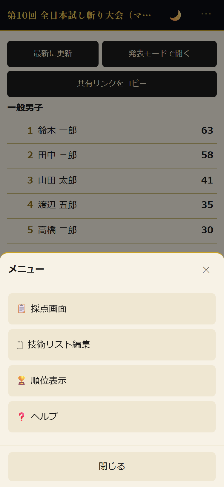
6. AI 用キー（AI に操作させる）
何ができるか
Claude Code などの AI に、この大会運営サーバーを操作させるためのキーです（運営の ID・パスワードとは別のものです）。キーを持つ AI は、次のことだけができます。
- 本番の大会は読むだけです（大会の一覧・選手・得点・順位）。書き換えや削除はできません。
- 書き込めるのは、名前が 「テスト用」で始まる大会だけです（大会の作成・選手の登録・採点・状態の進行・削除。予行演習用）。
- 運営の画面（運営・技得点表・招待・キーの発行）は開けません。
大会名を「テスト用」で始まる名前に変えて保存するときは、運営画面（基本情報）が「AI が書き込める大会になります」と確認します。トップの大会一覧には AI 書込可 の印が付きます。
発行と取り消し（運営画面・PC 用）
- PC 運営の 基本情報 の末尾の AI 用キー で 🔑 発行する を押します（ラベル・期限。期限は 30 日が標準で、最大 90 日）。
- キーは発行したときの 1 回だけ表示されます。キーをコピー で写します。
- 自分の PC のターミナル（Claude Code の外）で、画面に出ているコマンド（
set-key.ps1）を実行し、キーを貼り付けます。キーは Windows の資格情報マネージャーに保存され、AI を動かす MCP サーバーだけが読みます。 - 一覧の 取り消す で、いつでも使えなくできます。最後に使われた時刻と回数も一覧で分かります。